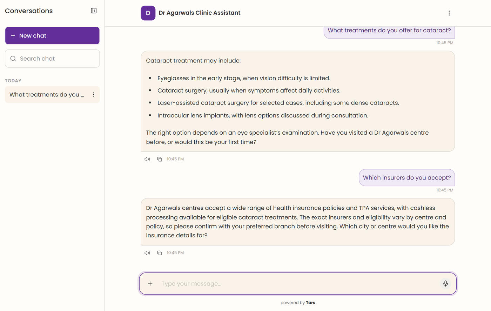
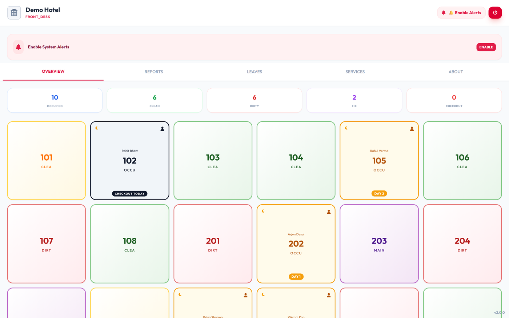
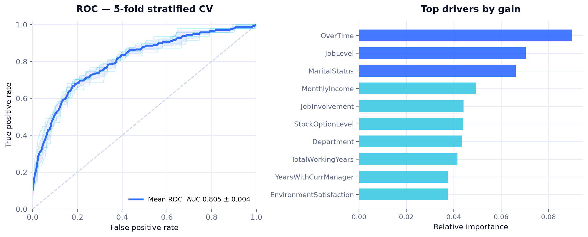

Live demo

AI Patient Intake Agent
Diagnosed why a naive crawl returned marketing pages instead of clinical content — and fixed retrieval at the source.
View case study →I build AI systems that run in production, not notebooks that stop at the demo — retrieval-backed agents, Text-to-SQL over live databases, and models served behind real APIs.

Most of what I have learned came from the parts that went wrong, so the last step is the one I refuse to skip.
Start with the constraint that actually bites — unreliable internet at a restaurant till, a knowledge base that must not invent prices. The constraint decides the architecture.
Enforce the rules where they cannot be bypassed. Business invariants in the database, not the UI. Retrieved context treated as untrusted input, not instructions.
Check retrieval before judging generation. Cross-validate before quoting a metric. That habit is how I found target leakage that had inflated a model’s score.
Four projects, each with a full case study — the problem, the decisions I would defend in an interview, and the limitations I would not hide.

Diagnosed why a naive crawl returned marketing pages instead of clinical content — and fixed retrieval at the source.
View case study →
Database-per-tenant, so a restaurant keeps trading when its internet drops.
View case study →
Replaced a clipboard-and-paper-slips process with live state every role reads from the same place.
View case study →
0.805 ROC-AUC on 5-fold CV — and a target-leakage bug found and documented rather than quietly benefited from.
View case study →An engineer who enjoys the intersection where a model stops being a notebook and starts being something a business relies on daily. A naive crawl that indexed marketing pages. A prompt-injection vector sitting in source data. Target leakage that made a model look far better than it was. Those are the sections I write up most carefully, because an engineer who can only describe the happy path has not finished the work.
| Freelance & independent projectsFour platforms built solo, end to end | 2025 → Now |
| MCA, Artificial Intelligence & MLKIIT University, Bhubaneswar | 2024 → 2026 |
| BBASamanta Chandra Sekhar College | 2021 → 2024 |
| CertificationsIBM Data Analyst · Google Data Analytics · ML Specialization (Stanford / DeepLearning.AI, in progress) | 2025 → 2026 |
Grouped by what it is for. Everything here appears in the work above.
Open to AI Engineering roles — LLM applications, retrieval systems and the engineering around them.